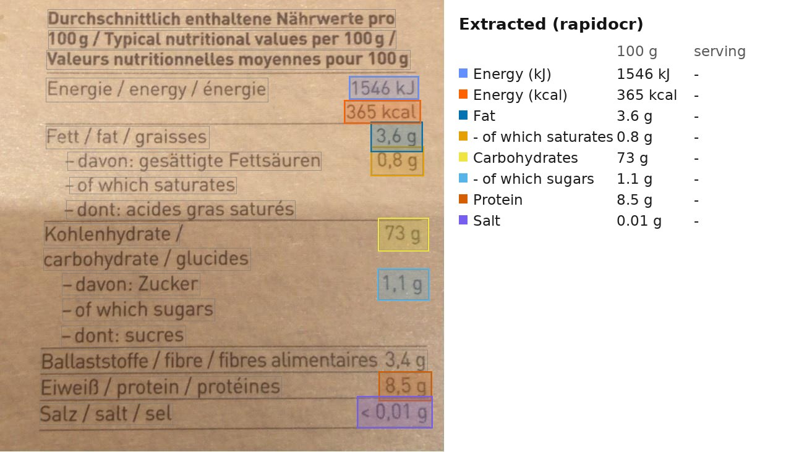
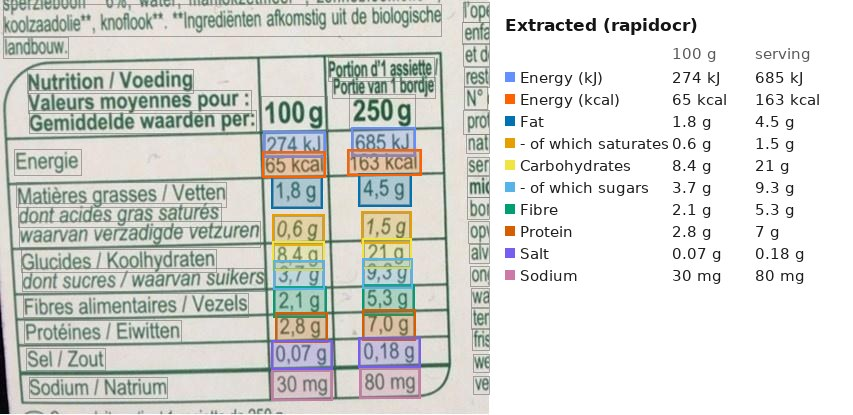

Turns a phone photo of a food package into structured nutrition data. Pick any of 15 OCR engines, from classic Tesseract to 2025–2026 vision-language OCR, and a layout-aware extractor finds every nutrient, its per-100 g and per-serving values, in 15+ languages and even on sideways photos. Nutritional sanity rules repair typical OCR slips, and every engine is measured on the same benchmark of real Open Food Facts photos.
The local web interface: open photos, read them with RapidOCR, browse the side-by-side view, switch to docTR to compare, export CSV. Recorded on a laptop CPU, reading sped up. Photos: Open Food Facts contributors (CC BY-SA 3.0).
OCR engines behind one parameter
15
languages, EU and US label formats
15+
F1 on real photos with RapidOCR on CPU
0.73
training needed
0
Python
RapidOCR (ONNX)
PaddleOCR
docTR
EasyOCR
Tesseract
Surya
olmOCR / GLM-OCR
Ultralytics OCR (YOLO26-text)
Docker
How it works
01From a crooked photo to clean numbers
The OCR engine only turns pixels into words with positions. Everything after that is a layout-aware extractor that reads the table the way a person does: it finds the nutrient names, finds the numbers with their units, matches each number to its row and column, then checks that the result makes nutritional sense.
Fig. 01 · Extraction pipeline, from the photo to structured data
Any engine, same extractor
Engines that return text instead of boxes (vision-language OCR) are laid out on a grid, so the same extractor and the same benchmark apply to all 15.
Real label layouts
Per-100 g and per-serving columns, kJ and kcal stacked in one cell, % reference-intake columns skipped, US panels, sideways photos and horizontal tables.
Self-checking
Saturated fat ≤ fat, sugars ≤ carbohydrates, ≤ 100 g per 100 g, kJ ≈ 4.184 × kcal: implausible values are flagged and a lost decimal separator is repaired.
Results
02Measured on real product photos
Field-level F1 on the 199-photo test split of the Open Food Facts nutrient-detection dataset: phone pictures, curved packs, glare and many languages. The reference feeds the dataset's own cloud OCR to the same extractor.
Fig. 03 · Field-level F1 per OCR engine on real photos (higher is better)

German / English / French table, values matched across three languagesSpanish label with per-100 g and per-serving columns

Small, low-resolution photo still read
Engine
F1
Precision
Recall
Perfect labels
Reference OCR (dataset tokens)
0.834
0.887
0.787
41.9 %
Ultralytics OCR (ultralytics:s, CPU)
0.742
0.774
0.712
20.1 %
RapidOCR (ONNX, CPU)
0.730
0.856
0.636
17.6 %
docTR
0.699
0.808
0.617
18.1 %
EasyOCR
0.544
0.677
0.454
6.0 %
The extractor was tuned on the train split only; the test split was held out. Ultralytics OCR (YOLO26 text detector + PP-OCRv6 recognizer) has the highest F1 of the engines, thanks to recall (0.712 against 0.636); RapidOCR on ONNX Runtime is more precise (0.856 against 0.774) and far faster on CPU (about 5.7 s per image against about 119 s). Ultralytics OCR is AGPL-3.0 and an optional extra. Harder photos: re-running the 10 lowest-scoring Ultralytics OCR photos with the larger x detector raised their mean F1 from 0.041 to 0.104 (4 improved, 6 unchanged, 4 still at 0, 3 of those because the extractor assigns values to the wrong per-100 g / per-serving column). This is a sample of the worst cases, so it is not comparable to the full split.
Gallery of real photos
Six photos from the test split read by RapidOCR: each value read is highlighted in the colour of its nutrient, next to the extracted table.
Generated by make report from the benchmark run. Photos: Open Food Facts contributors (CC BY-SA 3.0).
There is no single best OCR: accuracy, speed, install size, hardware and licence trade off. The benchmark measures the trade-offs; engine="auto" picks the first installed engine from a fixed preference list that favours light, fast engines.
Rules you can read
No training data is needed and every value can be traced back to the words and boxes it came from.
Benchmark first
Every change to the extractor is measured on real photos, with precision, recall, perfect-label rate and per-nutrient F1.
Light core
The core needs only NumPy and Pillow; each engine is an optional extra, so a CPU-only install stays small.
Local by design
CLI, web interface, Python API or Docker, and images never leave the machine. The web server uses only the standard library.
Open models only
Vision-language OCR runs through Hugging Face or a local Ollama / vLLM server; no paid API is called.